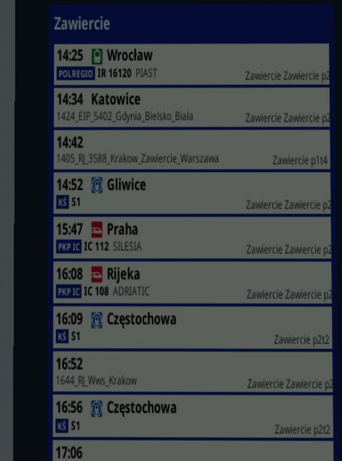
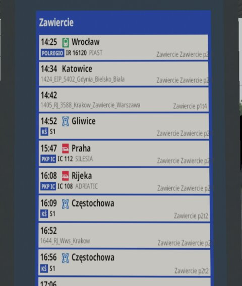
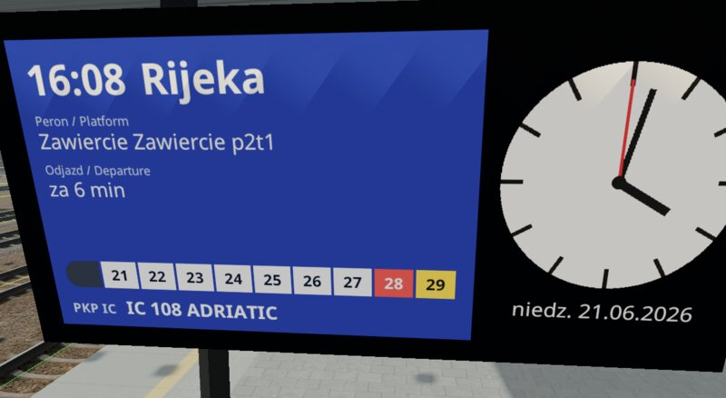
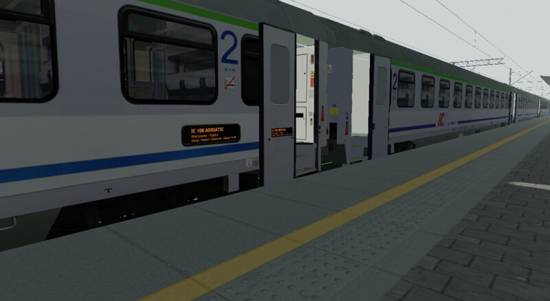
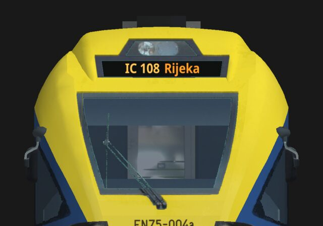

Wprowadzenie
English version: Displays.
Wyświetlacz pokazuje na kształcie żywy dokument: tablicę odjazdów na stacji, ekran peronowy z najbliższym pociągiem i zegarem, wyświetlacz kierunkowy pociągu, panel LED przy drzwiach wagonu. TSRE rysuje dokument do tekstury, a kształt ją pokazuje, w dzień i w nocy: w widoku 3D edytora tras, podczas symulacji i w przeglądarce modeli 3D (Shape Viewer).
Dokument to plik RmlUi (.rml):
znaczniki podobne do HTML ze stylami podobnymi do CSS. TSRE wypełnia go
danymi (zegar, odjazdy i przyjazdy stacji, dane pociągu) i rysuje go ponownie
tak często, jak chce tego wyświetlacz.
Przykłady są częścią TSRE (rozdział 10); warto otworzyć ich dokumenty obok tego poradnika.
1. Dwa rodzaje wyświetlaczy
| Rodzaj | Co to jest | Kiedy go użyć |
|---|---|---|
| Podmiana tekstury | Jeden z obrazów tekstur kształtu (wskazany nazwą pliku) zostaje w całości zastąpiony dokumentem. Każda część kształtu, która używa tego obrazu, pokazuje dokument. | Wyświetlacz ma własną teksturę: lico tablicy, tekstura wyświetlacza kierunkowego pociągu. |
| Prostokąt | Płaski prostokąt, który TSRE dodaje do kształtu, zawieszony na jednej z jego macierzy, z położeniem, obrotem i rozmiarem. Porusza się razem z tą macierzą (drzwi, pantografy). | Wyświetlacz jest namalowany na wspólnej teksturze (atlasie) albo ma się znaleźć tam, gdzie kształt go nie ma. |
Podmiana tekstury rysuje dokument na całej teksturze: rozmieść treść dokumentu tak, jak kształt mapuje teksturę. Fragmenty tekstury (prostokąty UV) nie są obsługiwane.


2. Wyświetlacz na kształcie stacyjnym
Tablica odjazdów ORB_Tpo4 ma na swoje lico osobną teksturę,
ORB_Tpo_ODJAZDY.ACE.
- Umieść dokument w folderze
DISPLAYStrasy:ROUTES/<route>/DISPLAYS/odjazdy.rml. Dodaj blok do pliku
.sdkształtu (ROUTES/<route>/SHAPES/ORB_Tpo4.sd), wewnątrz jego blokushape ( … ):tekstESD_TSREDisplay ( Document ( "odjazdy.rml" ) Image ( "ORB_Tpo_ODJAZDY.ACE" ) Resolution ( 512 1024 ) Surface ( Paper ) RefreshRate ( 0.2 ) Input ( Station ) )- Otwórz trasę. Tam, gdzie stoi tablica, TSRE znajduje najbliższy peron i jego stację, a tablica pokazuje pociągi tej stacji. Uruchom symulację (albo rozkład jazdy Open Rails), żeby ją wypełnić.
Ekran na wiszącym zegarze, którego wyświetlacz LCD jest namalowany na wspólnej teksturze, dostaje zamiast tego prostokąt:
ESD_TSREDisplay (
Document ( "peron_lcd.rml" )
ShapeHierarchy ( "MAIN" )
Position ( -0.207 0.414 0.001 )
Rotation ( 8.4 -90 0 )
Size ( 1.389 0.670 0 )
Resolution ( 1040 500 )
Surface ( Glass )
RefreshRate ( 1 )
Input ( Platform )
)

3. Wyświetlacz w pociągu
Wyświetlacze wagonu definiuje się tak samo, w pliku .sd jego kształtu, a
dokumenty leżą w folderze DISPLAYS zestawu taboru
(TRAINS/TRAINSET/<folder>/DISPLAYS). Z Input ( Train ) dokument dostaje
pociąg, w którym jedzie wagon: symulacja przekazuje każdemu wagonowi jego
pociąg.
Wagon Z2B (PKP_Z2B-OR/PKPIC_B11mnouz-70082.sd) ma cztery prostokąty: dwa
na pudle, na namalowanych panelach LED, i dwa na skrzydłach drzwi, które
przesuwają się razem z drzwiami:
ESD_TSREDisplay (
Document ( "z2_drzwi.rml" )
ShapeHierarchy ( "DOOR_B" )
Position ( 0.076 -0.625 0 )
Rotation ( 0 90 0 )
Size ( 0.5 0.135 0 )
Resolution ( 624 168 )
Surface ( Glass )
RefreshRate ( 1 )
Input ( Train )
)
Position podaje się w układzie współrzędnych macierzy: tutaj 7,6 cm na
zewnątrz od początku układu skrzydła drzwi i 62,5 cm poniżej niego.

EN75 (KS_EN75) ma teksturę, na której są tylko jego wyświetlacze
kierunkowe, EN75_wyswietlacz.ace: to podmiana tekstury, a dokument rysuje
pasy czołowe i boczne tam, gdzie mapuje je kształt.

4. Blok w pliku .sd
Jeden blok ESD_TSREDisplay ( … ) na wyświetlacz, wewnątrz bloku
shape ( … ) pliku .sd; każda wartość to nazwany wpis. Wielkość liter w
nazwach nie ma znaczenia. Plik .sd musi być plikiem tekstowym (Unicode).
| Wpis | Wartości | Znaczenie |
|---|---|---|
Document |
"plik.rml" |
Dokument, w folderze DISPLAYS trasy albo zestawu taboru; może leżeć w podfolderze ("tablice/odjazdy.rml"). Wymagany. |
Image |
"nazwa.ace" |
Podmiana tekstury: obraz tekstury, tak jak nazywa go lista images kształtu (bez folderu). |
ShapeHierarchy |
"MACIERZ" |
Prostokąt: macierz, na której wisi. Opcjonalny: domyślnie korzeń kształtu. |
Position |
x y z |
Prostokąt: jego środek, w metrach, w układzie tej macierzy. |
Rotation |
x y z |
Prostokąt: stopnie wokół x, potem y, potem z. Bez obrotu prostokąt leży w płaszczyźnie x–y, zwrócony w stronę +z. Opcjonalny. |
Size |
szer wys 0 |
Prostokąt: szerokość i wysokość w metrach (trzecia wartość to zawsze 0). |
Resolution |
szer wys |
Rozmiar dokumentu w pikselach. Opcjonalny dla Image (rozmiar tekstury); dla prostokąta domyślnie 512 × 256. Zachowaj proporcje prostokąta. |
Surface |
Glass albo Paper |
Glass świeci tak, jak go narysowano, o każdej porze (ekran, panel LED); Paper oświetla scena, w nocy jest ciemny, chyba że dosięga go lampa. Opcjonalny: podmieniona tekstura zachowuje materiał swoich części, prostokąt jest Glass. |
RefreshRate |
n |
Odświeżenia na sekundę; ułamek dla rzadszych: 0.2 to odświeżenie co 5 sekund. 0 rysuje dokument raz. |
Input |
Platform, Station, Train |
Co dokument dostaje oprócz zegara (rozdział 6). Opcjonalny: wtedy tylko zegar. Clock znaczy to samo. |
Blok potrzebuje wpisu Document oraz albo Image, albo Position i
Size; w przeciwnym razie jest pomijany (i zgłaszany, rozdział 9).
5. Pisanie dokumentów
- Model danych:
bodydokumentu wiąże model danychdisplay:<body data-model="display">. Teksty to{{station}}, listydata-for="row, i : departures", warunkidata-if="…", a powiązać można każdy atrybut i styl (data-attr-src,data-style-…). Szczegóły w dokumentacji wiązania danych (data bindings) RmlUi. - Czcionki: czcionki interfejsu TSRE,
Noto Sanszwykła i pogrubiona. - Obrazy:
<img src="…">idecorator: image(…)są czytane z folderu tekstur zasobu, tak jak tekstury jego kształtów: zTEXTUREStrasy dla dokumentu trasy, z własnego folderu zestawu taboru dla dokumentu pociągu. Formaty: ACE, DDS, PNG, JPG, BMP, TGA. Obrazy wczytują się w tle; wyświetlacz narysowany, zanim dotrą, jest rysowany ponownie, gdy tylko będą gotowe. - Arkusze stylów i skrypty (
.rcss,.lua) są czytane z folderu dokumentu. - Współdzielenie: wyświetlacze, które pokazują ten sam dokument z tymi samymi danymi wejściowymi (ten sam peron, stacja albo pociąg) w tej samej rozdzielczości, dzielą jedną teksturę: tablice jednej stacji, wagony jednego pociągu.
- Odświeżanie: wyświetlacz jest rysowany ponownie tak, jak podaje
RefreshRate, gdy jest w polu widzenia. W jednej klatce rysuje się najwyżej tyle dokumentów, ile podaje ustawienieOdświeżenia wyświetlaczy na klatkę(core.rendering.displayRedraws, Ustawienia, domyślnie 2), w tym najwyżej jeden wczytywany: najpierw te, które czekają najdłużej, bliższe przed dalszymi. - Poza widokiem: tekstura dokumentu jest zwalniana, gdy żaden z jego
wyświetlaczy nie był rysowany przez czas z ustawienia
Tekstury wyświetlaczy poza widokiem(core.rendering.displayKeepUnseen, Ustawienia, domyślnie 60 sekund; 0 je zachowuje), i rysowana ponownie, gdy któryś wróci. W tej pierwszej klatce kształt pokazuje własną teksturę (prostokąt: nic), tak jak wtedy, gdy wyświetlacz pojawia się pierwszy raz.
Funkcje TSRE
TSRE dodaje do wyrażeń dokumentów funkcje do tego, czego samo wiązanie
danych nie potrafi: formatowania czasu i daty, odliczania, przełączania
języków. Pisz {{ wartość | funkcja(argumenty) }} albo
funkcja(argumenty); potoki można łączyć. Pusta wartość (dane, których
pociąg nie ma) daje pusty tekst, z wyjątkiem default.
| Funkcja | Działanie | Przykład |
|---|---|---|
format_time(wzorzec) |
Czas (HH:mm) według wzorca czasu Qt. |
{{ row.time | format_time('h:mm AP') }} → 2:25 PM |
format_date(wzorzec, język) |
date według wzorca daty Qt; nazwy dni i miesięcy w danym języku, bez niego po angielsku. |
{{ date | format_date('dd.MM.yyyy') }} → 02.11.2026; format_date('dddd', 'pl') → poniedziałek |
pad(szerokość, znak) |
Uzupełnia z lewej (zerami, chyba że podano znak). |
{{ day | pad(2) }} → 02 |
default(tekst) |
tekst, gdy wartość jest pusta. |
{{ row.platform | default('-') }} |
add_minutes(n) |
Czas o n minut późniejszy. |
{{ row.time | add_minutes(row.delay) }}: czas rzeczywisty |
minutes_until(clock) |
Minuty od zegara do danego czasu, ujemne, gdy minął. | {{ row.time | add_minutes(row.delay) | minutes_until(clock) }} min |
cycle(sekundy, a, b, …) |
Po kolei jedna z wartości według zegara, każda przez tyle sekund. | {{ clock | cycle(4, 'Odjazdy', 'Departures') }}; data-if="clock | cycle(4, true, false)" |
Zegar trafia do cycle i minutes_until jako clock: RmlUi oblicza
wyrażenie ponownie tylko wtedy, gdy zmienią się dane w nim użyte. Są też
funkcje samego RmlUi: to_upper, to_lower, format(miejsca), round.
Wyświetlacz, który zmienia się co kilka sekund (cycle, odliczanie),
potrzebuje odpowiedniego RefreshRate.
Lua
Do większości dokumentów wystarczy wiązanie danych i funkcje TSRE. Dokument może też
uruchamiać Lua (wtyczka Lua do RmlUi): <script src="plik.lua"></script> w
nagłówku i procedury obsługi zdarzeń w elementach. Przy każdym odświeżeniu
TSRE wysyła do dokumentu zdarzenie displayupdate, a
event.parameters.time to liczba sekund zegara od północy:
<body data-model="display" ondisplayupdate="z2DrzwiUpdate(event, document)">
function z2DrzwiUpdate(event, document)
local english = math.floor(event.parameters.time / 4) % 2 == 1
document:GetElementById("pl"):SetClass("hidden", english)
document:GetElementById("en"):SetClass("hidden", not english)
end
Wszystkie dokumenty dzielą jeden stan Lua: nadawaj funkcjom globalnym takie
nazwy, które nie zderzą się z funkcjami innego dokumentu. Lua działa z
limitem czasu. (Ten przykład, z2_drzwi_lua.rml, jest też w wersji bez Lua:
z2_drzwi.rml robi to samo funkcją cycle.)
6. Co dokument może odczytać
Każdy dokument:
| Nazwa | Wartość |
|---|---|
time |
Zegar, HH:mm (symulacji, gdy działa, w przeciwnym razie trasy). |
clock |
Zegar w sekundach od północy, dla cycle i minutes_until. |
date |
yyyy-MM-dd. |
hours, minutes, seconds |
Liczby, do wskazówek zegara (data-style-transform). |
year, month, day |
Liczby, do daty w innym porządku (albo format_date). |
Z Input ( Platform ) (najbliższa krawędź peronu w promieniu 300 m; dla
prostokąta liczona od miejsca 3 m przed nim, gdzie stoi patrzący) albo
Input ( Station ) (wszystkie perony stacji):
| Nazwa | Wartość |
|---|---|
station, platform |
Nazwa stacji; nazwa peronu (nie dla Station). |
departures, arrivals |
Listy wierszy, według czasu; postój, który już minął, jest pomijany. |
row.time |
Czas według rozkładu. |
row.id |
Nazwa pociągu w rozkładzie. |
row.category, row.number, row.name, row.operator, row.line |
Pola pociągu (rozdział 7), puste, gdy ich nie ma. |
row.origin, row.destination |
Jego własne (rozdział 7), w przeciwnym razie stacje jego pierwszego i ostatniego postoju na trasie (puste, gdy pociąg w tym miejscu wjeżdża na trasę albo z niej zjeżdża). |
row.platform |
Peron, przy którym się zatrzymuje. |
row.delay |
Minuty opóźnienia; puste, gdy pociąg jedzie punktualnie. |
row.extra.<klucz> |
Własne dane użytkownika (rozdział 7); pusty tekst dla klucza, którego pociąg nie ma. |
Z Input ( Train ) (wyświetlacz wagonu):
| Nazwa | Wartość |
|---|---|
train.id |
Jego nazwa w rozkładzie. |
train.category, train.number, train.name, train.operator, train.line |
Jego pola (rozdział 7). |
train.origin, train.destination |
Jego własne, w przeciwnym razie stacje jego pierwszego i ostatniego postoju. |
train.state |
waiting (jeszcze nie wyruszył), standing (stoi na stacji), held (zatrzymany gdzie indziej), running (w drodze), approaching (do najbliższego postoju zostało najwyżej 500 m), finished (zakończył bieg); puste bez symulacji. |
train.at |
Stacja, na której stoi. |
train.next |
Następny postój, do którego dojedzie (gdy stoi: kolejny po tym). |
train.previous |
Ostatnia stacja, z której odjechał. |
train.platform |
Peron, przy którym stoi, w przeciwnym razie peron następnego postoju. |
train.departs, train.arrives |
Odjazd według rozkładu z miejsca, w którym stoi (przed wyruszeniem: z pierwszego postoju); przyjazd według rozkładu do next. |
train.distance |
Metry do następnego postoju, jeśli są znane. |
train.delay |
Minuty opóźnienia. |
train.stops |
Jego postoje na trasie, lista: station, platform, arrives, departs (według rozkładu), passed (już odjechał). |
train.extra.<klucz> |
Własne dane użytkownika (rozdział 7). |
Pociąg bez pól: pokaż je, gdy są, a gdy ich nie ma, nazwę z rozkładu:
<span data-if="row.category != ''">{{row.category}} {{row.number}} {{row.name}}</span>
<span data-if="row.category == ''">{{row.id}}</span>
Postoje, które pociąg ma jeszcze przed sobą:
<span data-for="stop : train.stops">
<span data-if="!stop.passed">{{stop.station}}</span>
</span>
7. Dane pociągów w rozkładzie jazdy
Rozkład jazdy Open Rails nazywa każdy pociąg raz, nagłówkiem jego kolumny;
nie ma pola na numer, kategorię ani przewoźnika, więc autorzy często
upychają je w nazwie (0846_IR46140SZYNDZIELNIA_KK-O). Żeby pokazać je
osobno, zapisz je w osobnych wierszach.
Pola pociągu TSRE, każde opcjonalne: wpisz te, których potrzebuje twoja trasa.
| Wiersz | Pole |
|---|---|
#tsre.category |
Kategoria: IC, TLK, R. |
#tsre.number |
Numer pociągu. |
#tsre.name |
Jego nazwa własna: PIAST. |
#tsre.operator |
Przewoźnik: PKP IC, POLREGIO. |
#tsre.line |
Linia: S1. |
#tsre.origin |
Skąd przyjeżdża, spoza trasy. |
#tsre.destination |
Dokąd jedzie, poza trasę. |
#tsre.category;;IR;TLK;…
#tsre.number;;61120;62102;…
#tsre.name;;PIAST;SZTYGAR;…
Własne dane użytkownika: wiersze #tsre.extra.<klucz>, z dowolnym
kluczem; dokumenty czytają je jako row.extra.<klucz> i
train.extra.<klucz>:
#tsre.extra.kind;;regional;regional;…
- Komórka pociągu to jego wartość; pusta komórka: brak wartości.
- Klucze pisz małymi literami (Open Rails zamienia pierwszą komórkę wiersza
na małe litery), tylko z liter a–z, cyfr i
_. - Open Rails czyta taki rozkład: każdy z tych wierszy daje w jego dzienniku jedną linię „Invalid row definition”, a sam wiersz jest pomijany. Używaj wierszy, nigdy kolumn.
- Okno rozkładu jazdy TSRE je edytuje, w sekcji Dane pociągu panelu pociągu (pola oraz klucze i wartości własnych danych), i zapisuje je z powrotem przy zapisie.
Przykłady używają siedmiu pól oraz klucza kind (fast, regional,
aglo) dla piktogramów rodzaju pociągu na tablicach
(rodzaj_pociagu_<kind>.png w TEXTURES trasy).
8. Szkło, papier i noc
Glass: kolory dokumentu takie, jak je narysowano, o każdej porze, jak podświetlony ekran. Prostokąt jest szkłem, chyba że blok mówi inaczej.Paper: oświetlony tak, jak oświetla go scena: jasny w dzień, w nocy ciemny, chyba że dosięga go lampa. Drukowana tablica.- Bez
Surfaceczęści podmienionej tekstury zachowują własny materiał kształtu, łącznie z PBR.
Tablica odjazdów z rozdziału 1 jest pokazana na oba sposoby, w dzień pod dachem peronu.
9. Komunikaty i rozwiązywanie problemów
Problemy pojawiają się w Okno > Błędy i komunikaty, każdy jeden raz:
- pominięty blok (brak
Document; aniImage, aniPositioniSize); - nie znaleziono dokumentu albo leży on poza folderem
DISPLAYS; Image, którego kształt nie ma (nic nie pokazuje dokumentu);ShapeHierarchy, której kształt nie ma (prostokąt wisi na korzeniu kształtu);- nie znaleziono obrazu;
- dokument się nie wczytał, a także błędy i ostrzeżenia RmlUi w dokumencie (szczegóły są w dzienniku).
W przeglądarce modeli 3D wyświetlacze kształtu pokazują przykładowe dane: stację z odjazdami i przyjazdami oraz pociąg (IC 108 ADRIATIC).
10. Przykłady
Dokumentacja TSRE zawiera przykładowe dokumenty w
docs/examples/displays, ułożone jak w
folderze gry, z obrazami, których używają, i plikiem README z blokami .sd
każdego dokumentu. Każdy dokument zaczyna się od komentarza (po angielsku)
o tym, co pokazuje i jak.
| Przykład | Rodzaj | Pokazuje | Używa |
|---|---|---|---|
ROUTES/PRUDNIK/DISPLAYS/odjazdy.rml, przyjazdy.rml |
Tekstura, papier; Station | Tablice odjazdów i przyjazdów stacji. | List; pól pociągu, a gdy ich nie ma, nazwy z rozkładu; piktogramu wybranego przez row.extra.kind; opóźnienia. |
ROUTES/PRUDNIK/DISPLAYS/peron_lcd.rml |
Prostokąty, szkło; Platform | Ekran peronowy z zegarem wskazówkowym. | add_minutes i minutes_until (minuty do odjazdu), format_date; wskazówek powiązanych z hours, minutes, seconds. |
TRAINS/TRAINSET/KS_EN75/DISPLAYS/en75_wyswietlacze.rml |
Tekstura, szkło; Train | Czołowe i boczne wyświetlacze kierunkowe EZT. | Stanu pociągu; train.stops (postoje przed nim). |
TRAINS/TRAINSET/PKP_Z2B-OR/DISPLAYS/z2_drzwi.rml |
Prostokąty, szkło; Train | Panele wagonu na pudle i na skrzydłach drzwi, przesuwające się z drzwiami. | cycle: po polsku, potem po angielsku. |
TRAINS/TRAINSET/PKP_Z2B-OR/DISPLAYS/z2_drzwi_lua.rml, z2_drzwi.lua |
Prostokąty, szkło; Train | Te same panele. | Lua przy displayupdate. |
Powstały dla kształtów trasy Prudnik z OR_PSK, stąd ROUTES/PRUDNIK;
README wymienia kształty. Dla innego kształtu ułóż dokument według jego tekstury albo
jego prostokąta, a resztę zostaw.
11. Znane ograniczenia
- Wyświetlacze na obiektach statycznych i na wagonach; jeszcze nie na sygnalizatorach, przejazdach kolejowych ani innych obiektach z kształtami.
- Na razie tylko kształty MSTS (kształty glTF później); tylko tekstowy plik
.sd. - Odświeżanie wyświetlacza liczy czas rzeczywisty: podczas pauzy wyświetlacz zegara wciąż jest rysowany ponownie (ten sam obraz).
- Jeszcze nie: wyświetlacze w kabinie (ekrany kabiny, CVF) i klikanie w wyświetlacz; oba przyjdą później.